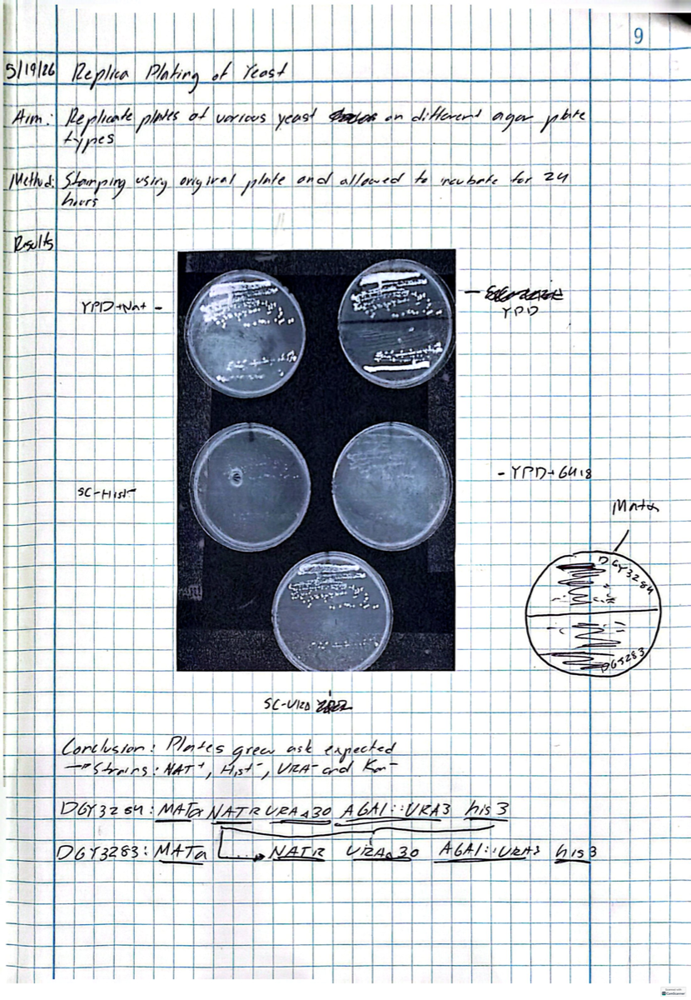
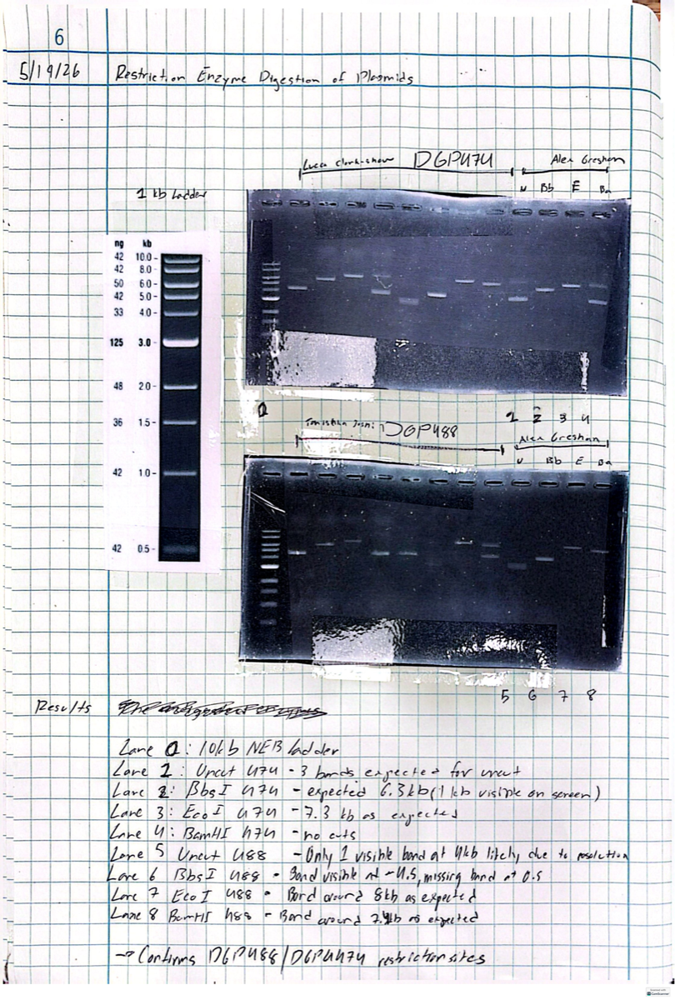
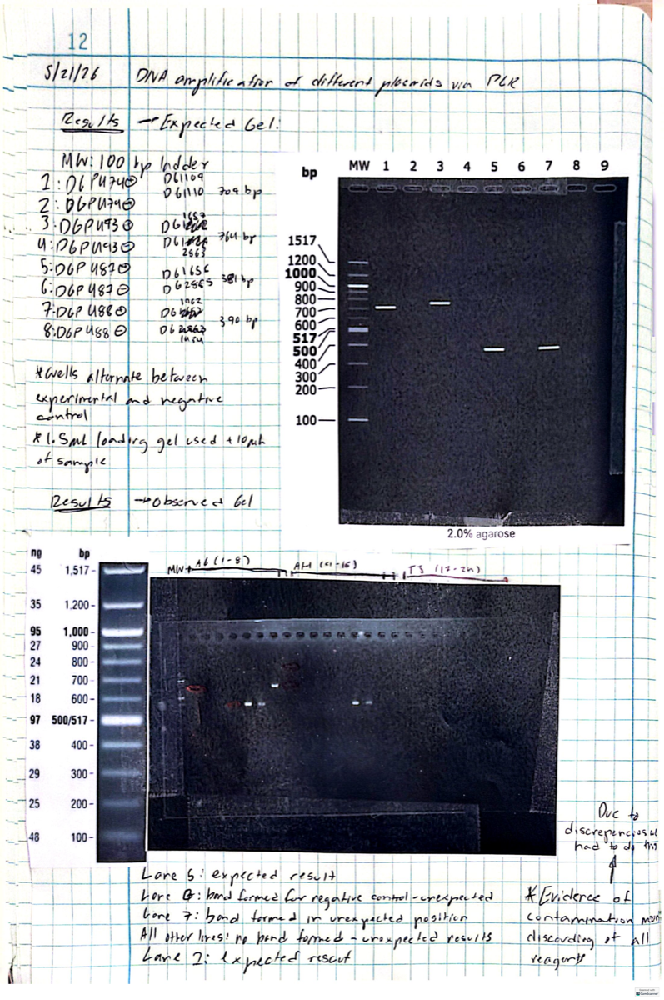
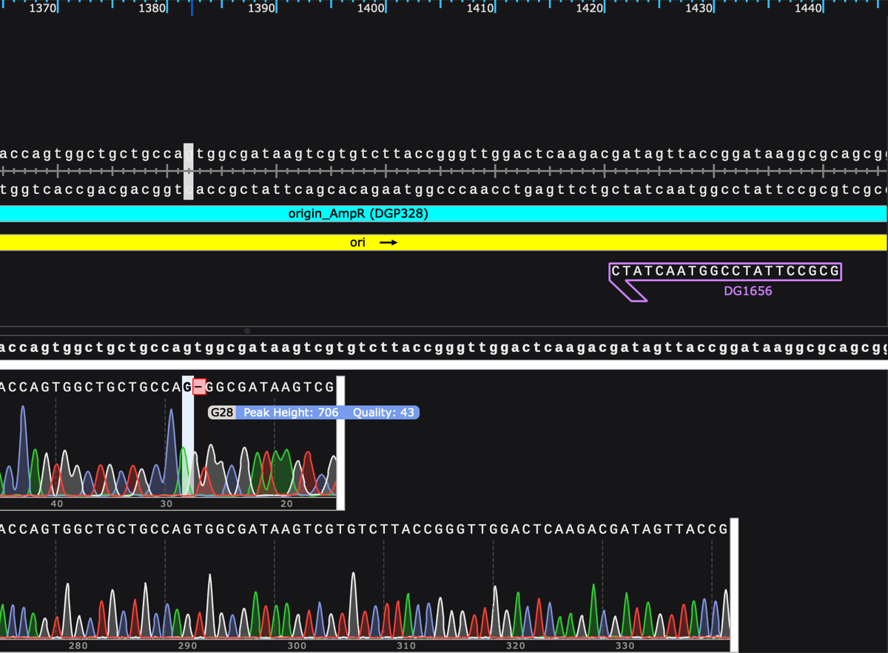
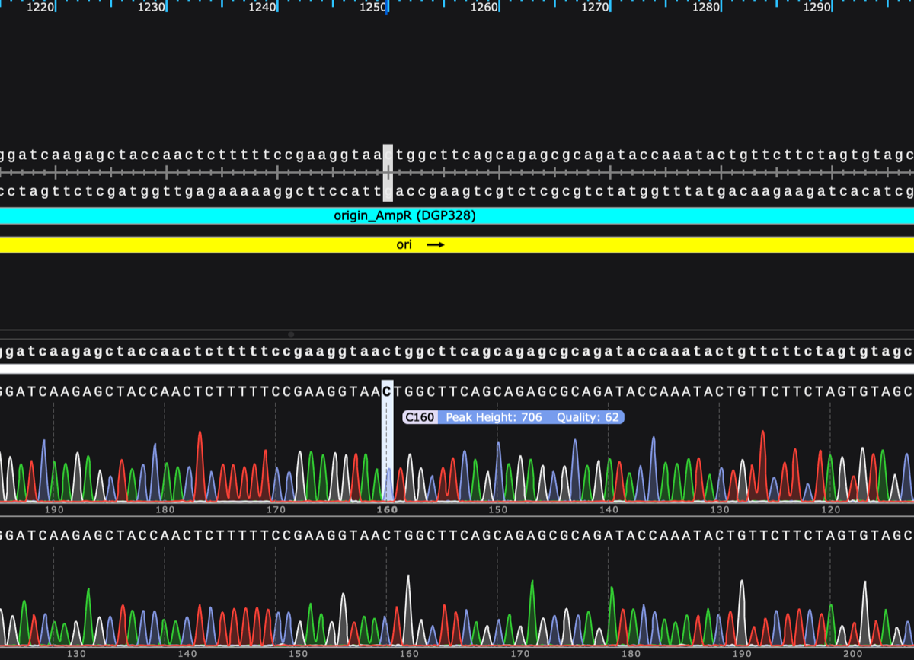
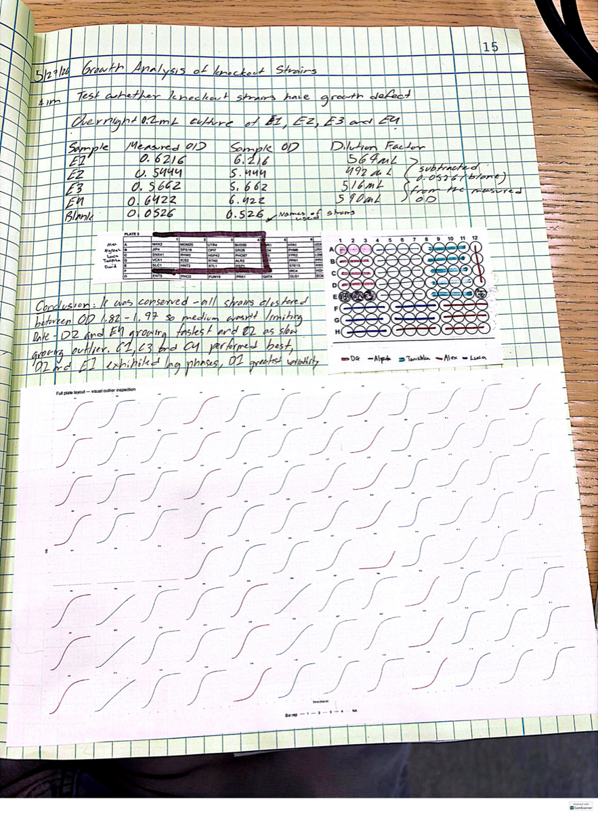
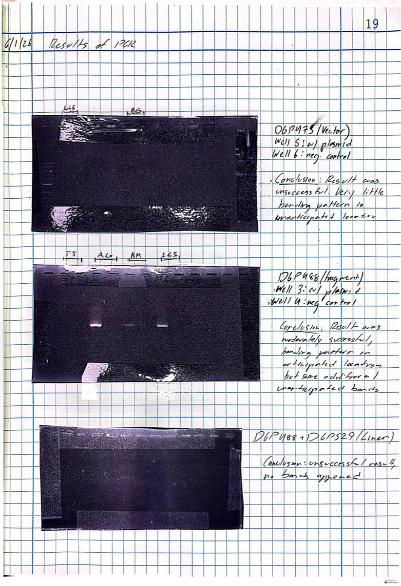
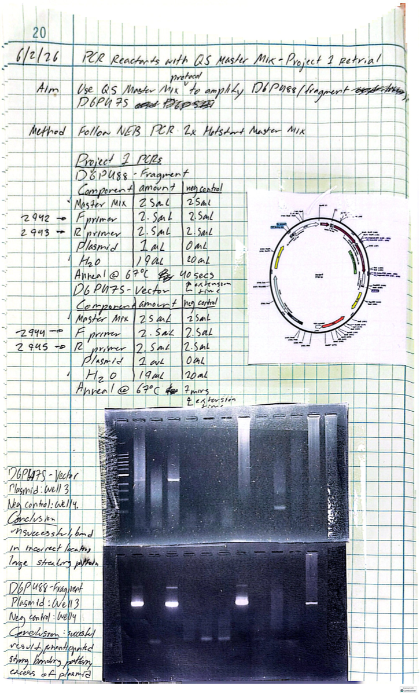

Preparation of YPD Rich Media
SuccessfulAim
Prepare 250 mL of sterile YPD liquid medium and agar plates for downstream S. cerevisiae culture.
Protocol Summary
- 2.8 g yeast extract + 5 g peptone + 5 g agar dissolved in 237.5 mL dH2O
- Autoclaved at 121°C for 15 min
- 12.5 mL of 40% sterile glucose added post-autoclave → 250 mL total
Yeast Streaking & Bacterial Culture Initiation
SuccessfulAim
Isolate a single S. cerevisiae colony; initiate overnight E. coli cultures for plasmid DNA harvest.
Methods
- Yeast: Serial dilution streaking on YPD agar; incubated 30°C for 48 h
- Bacteria: DGP474 & DGP493 strains inoculated into LB + ampicillin (4 μL); 37°C shaking overnight at ~200 rpm

Yeast colonies growing on selective agar plates (replica plating, Entry 6)
Miniprep Plasmid DNA Purification & Quantification
SuccessfulAim
Purify plasmid DNA from E. coli cultures of DGP474, DGP487, DGP488, and DGP493 using the QIAprep alkaline lysis spin column protocol.
Key Steps
- Alkaline lysis (NaOH/SDS) denatures proteins and chromosomal DNA
- Neutralization precipitates denatured material; plasmid remains in solution
- Silica column adsorbs plasmid under high-salt conditions; eluted in 50 μL H2O
Results
| Plasmid | Conc. (ng/μL) | A260/A280 | Total Yield (ng) |
|---|---|---|---|
| DGP474 | 271.0 | 1.87 | 13,550 |
| DGP493 | 65.5 | 1.64 | 3,275 |
| DGP487 | 82.7 | 1.69 | 4,135 |
| DGP488 | 59.8 | 1.68 | 2,990 |
Restriction Enzyme Digestion — Plasmid Identity Verification
Identity ConfirmedAim
Confirm plasmid identities (DGP474 and DGP488) by comparing observed restriction fragment sizes to predicted maps.
Enzymes Used
Results
- DGP474 — BbsI: ~6.3 kb (as predicted)
- DGP474 — EcoRI: ~7.3 kb linear (as predicted)
- DGP474 — BamHI: no cut ✓
- DGP488 — EcoRI: ~8 kb (as predicted)
- DGP488 — BamHI: ~7.4 kb (as predicted)

1.0% agarose gel — restriction digests of DGP474 (lanes 1–4) and DGP488 (lanes 5–8) with 1 kb NEB ladder
Preparation of SC-His Selective Media
SuccessfulAim
Prepare SC-His agar plates for auxotrophic selection of yeast transformants carrying a HIS3-marked plasmid.
Composition (at ¼ scale, 475 mL)
Replica Plating — Strain Phenotype Characterization
Growth as ExpectedYeast strains DGY3264 and DGY3283 replica-plated onto YPD+NAT, YPD, YPD+G418, SC-His, and SC-Ura
Aim
Characterize auxotrophic and drug resistance phenotypes of strains DGY3264 and DGY3283 across multiple selective media.
Strain Genotypes
| Strain | Mating Type | Resistance | Auxotrophy |
|---|---|---|---|
| DGY3264 | MATα | NATR | his3, URA3→AGA1 |
| DGY3283 | MATa | NATR | his3, URA3→AGA1 |
High-Efficiency Lithium Acetate Yeast Transformation
UnsuccessfulAim
Introduce plasmid DGP474 into S. cerevisiae via LiAc transformation; select transformants on SC-His.
Transformation Mix (per reaction)
- Cells heat shocked at 42°C for 40 min
- Plated in 2, 20, and 200 μL volumes on SC-His
- Incubated 30°C for 2–4 days
SC-His Plate Validation by Replica Plating
Plates ValidatedYeast from a YPD plate were replica-plated onto SC-His and allowed to grow overnight at 30°C. Robust colony growth was observed, confirming that the selective medium was correctly prepared and capable of supporting histidine-prototrophic yeast. The transformation failure (Entry 7) was therefore not attributable to a media defect.
PCR Amplification of Plasmid Inserts
Contamination DetectedAim
Amplify specific sequences from DGP474, DGP493, DGP487, and DGP488 using OneTaq Master Mix.
Expected Products
- DGP474 (DG1109/DG1110): 309 bp
- DGP493 (DG1659/DG1662): 764 bp
- DGP487 (DG1656/DG2885): 381 bp
- DGP488 (DG1062/DG2663): 390 bp

2.0% agarose gel — PCR products from DGP474, DGP493, DGP487, DGP488. Lanes alternate experimental and negative control. Evidence of contamination in multiple lanes.
Sanger Sequencing Verification of PCR Product
Identity ConfirmedAim
Confirm sequence identity of DGP487 PCR product (primers DG1656/DG2885) by Sanger sequencing and SnapGene alignment.
Purification Results
Sequence Alignment


Growth Analysis of Yeast Knockout Strains
Complete
96-well plate layout and sigmoidal OD600 growth curves for knockout strains E1–E4 alongside lab controls
Aim
Determine whether knockout strains E1–E4 exhibit growth defects under standard YPD conditions.
Starting OD Measurements
| Strain | Measured OD600 | Diluted OD |
|---|---|---|
| E1 | 0.6216 | 6.216 |
| E2 | 0.5444 | 5.444 |
| E3 | 0.5662 | 5.662 |
| E4 | 0.6422 | 6.422 |
PCR Reactions for Cloning Assembly (Project 2)
Fragment ✓ Vector ✗Aim
Amplify DGP488 insert fragment and DGP475 vector backbone separately for downstream Gibson Assembly.


Flow Cytometry Analysis of mCitrine Expression
CompleteAim
Quantify mCitrine fluorescence at single-cell resolution across four S. cerevisiae strains using the Cytek Aurora flow cytometer, following the Gresham Lab CytoExploreR analysis pipeline.
Methods
- 20,000 events measured per sample on the Cytek Aurora
- mCitrine detected via B2-A channel (ex. 516 nm / em. 529 nm)
- Gating hierarchy: All Events → Cells → FSC Singlets → mCitrine gate
- Data exported as summary statistics; analyzed in R using
tidyverse
Strains Analyzed
| Strain | Description | FSC Singlets | mCitrine+ Cells | % mCitrine+ | Median B2-A |
|---|---|---|---|---|---|
| DGY3283 | Negative control (no mCitrine) | 9,851 | 2 | 0.02% | 728 |
| DGY2807 | Negative control (no mCitrine) | 12,392 | 2 | 0.02% | 750 |
| DGY3955 | mCitrine-expressing strain | 12,960 | 12,920 | 99.69% | 59,245 |
| DGY3954 | Experimental strain | 7,509 | 3,213 | 42.79% | 3,003 |
Results
Percentage of FSC-gated singlet cells falling within the mCitrine+ gate for each strain. Data from Cytek Aurora; analysis in R (download Rmd).
Conclusions
- DGY3283 and DGY2807 confirmed as zero-copy negative controls (<0.05% mCitrine), validating the gating strategy.
- DGY3955 shows 99.69% mCitrine positivity, consistent with constitutive single-copy expression at a stable genomic locus.
- DGY3954 is the most biologically significant result: 42.79% of singlet cells are mCitrine-positive while 57.21% are not. This heterogeneous, bimodal population is consistent with an active copy number variation (CNV) event at the GAP1 locus — a subpopulation of cells has amplified the GAP1-mCitrine reporter under nutrient stress while the remainder retain the ancestral copy number.
Ongoing Work & Next Steps
- Optimize DGP475 vector PCR — adjust extension time or switch to long-range polymerase
- Repeat yeast transformation with fresh competent cells and verified reagents
- Continue growth phenotype analysis of knockout strains
- Expand flow cytometry analysis with additional time points to track CNV dynamics in DGY3954
Last updated June 2026. This page will be updated as research continues.